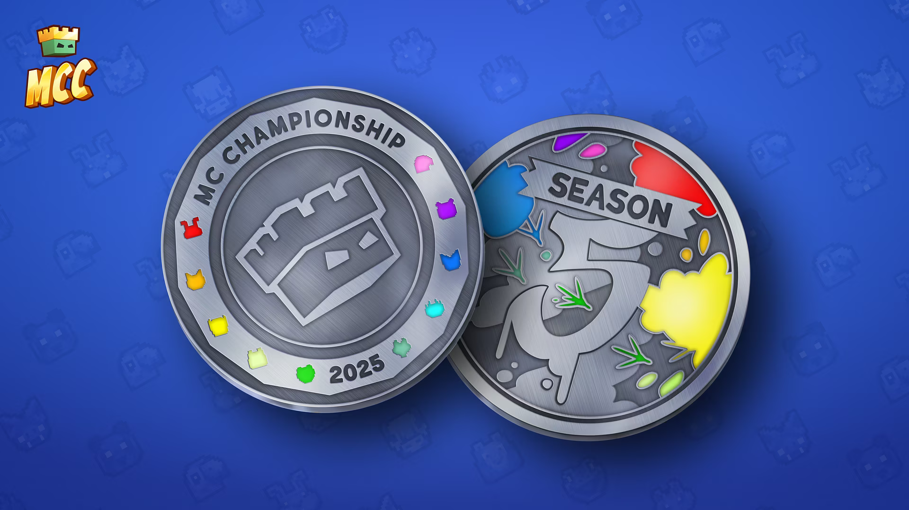

Like many successful people, Alex started off rather
modestly. When he was 10 years old he created his first
youtube channel StudioLORE
where he posted
Roblox and Team Fortress 2 videos for the next 4
years. Alex didn’t see much success with this type of
content so he knew branching out to a different video
game was the correct move.
That's how Derp
Squad came to be in August, 2013. A
youtube channel focused around Minecraft gameplay where
Alex and his brother would play. Though this channel was
abandoned when the “Technoblade” channel was created 2
months later.
Despite being only 14 years old, Technoblade was very good at Minecraft player vs player(PvP). He would join very small Faction servers and take them over within a few months of playing. After some time of posting this type of content, people began to recognize Techno for his PvP skills and humor.
After a while, Faction servers were too small for his ambition, but thankfully he had other places to go. More specifically the Minecraft servers Hypixel and Mineplex(which was way more popular at the time). Techno would make a very crucial decision to post on Hypixel instead as it wasn’t over saturated with other creators.
Technoblade: Hypixel Pioneer
Chapter One: Blitz Survival Games
At the start of his Hypixel journey, he mostly played Blitz Survival Games and quickly became one of its best players at the time. After a year and a half of consistent posting he managed to amass 14,000 subscribers and was finally monetized.
Unlike most 15 year olds Techno showed a lot of maturity in deciding to invest back into his channel’s growth instead of mindlessly wasting his earnings. Every few months he would take all his money and buy ads which would play before other Minecraft videos, asking people to subscribe to his channel.
Despite how much success posting Blitz Survival Games content had brought him, Techno knew he'd have to move away to something different. Thankfully in 2015 Hypixel released a mini game called SkyWars, which was so popular that it helped Hypixel push its player count way past that of Mineplex.
Techno was absolutely grinding this gamemode away. After two years of constantly playing it, he managed to grow his channel to 120,000 subscribers. Though, as someone who strived to be better at all times, he wanted more, and after some research, Techno found out about live streaming.
Chapter Three: Live Streaming
At the time live streaming on YouTube was like a cheat code. After each stream you would gain a few thousand new subscribers. By the time YouTube had altered the algorithm so live streaming woudn't be so potent. Techno was already sitting at 350,000 subscribers, after only a few months of consistent streaming. In this point of time, one of his most know feats(Beating Minecraft Hardcore with a Steering Wheel) happened.
Chapter Four: Bedwars
In June, 2017 another popular Hypixel minigame named Bedwars was released. Techno played it relentlessly and as always wanted to be the best and climb up the ranks to win an exclusive cosmetic that he’d use to flex during videos. He had reached a 350 game winning streak and at the time the world record for consecutive bedwars wins was 374.
Techno wouldn’t have been happy with just barely beating the world record, he wanted to make history. So he formed a team, with other very good bedwars players, and they managed to push the win streak close to 2000!
Chapter Five: SkyBlock
After Minecraft’s rise in popularity again(thanks to PewDiePie), Hypixel released yet another hit minigame, Hypixel: SkyBlock. Hypixel’s own take on Skyblock. Techno as always capitalized on the opportunity and released SkyBlock content, achieving 1 million subscribers in the process. At this huge milestone Techno had promised us(his fans) an elbow review, and he delivered!
Technoblade: Minecraft Monday Challenger
As he was grinding Skyblock, Keemstar was organizing a Minecraft tournament, ‘Minecraft Mondays’ which consisted of many 2 player teams going against each other. In this event many famous Minecraft creators like PewDiePie, CaptainSparklez, AntVenom, SkyDoesMinecraft and many more participated.
Techno’s team absolutely dominated the first two tournaments, securing first place in each. Due to this fact the organizers changed up the event so it wouldn’t be so PvP dependent. Out of 14 tournaments he won 4. Even when he didn’t win, Techno would always still be ranked high in the individual points leaderboard.
During week 14 the main game was cancelled due to hacking attempts on the server. However, Techno and some other YouTubers had their own finale on Hypixel. He managed to tie for first place with TapL.
Technoblade: Minecraft Championship Menace
In November, 2019 Technoblade participated in the first instance of the Minecraft Championship. An event where youtubers and streamers would play mini games against one another. The tournament consisted of 10 teams and 40 players. The prize was a special MCC coin.

Techno did very well in this tournament, never leaving the top 10 individual score leaderboard and winning 2 out of the 13 season 1 tournaments.
Technoblade: Absolutely Ruining a $36,000 Minecraft Tournament
Minecraft Ultimate Hunger Games was an event for 250+ live streamers. It is known as the largest event held in the Minecraft community. The event’s core mission was to raise money for charity. Participants would receive in-game items from their fans' donations. On July 24, 2020 it was announced that Technoblade would be participating in season 2 of the event as a last minute replacement, if and only if he would be counted as 2 players(to even the playground).
Due to his large fanbase, his team got a lot of items and Techno alone raised $11,625 out of the $36,264 raised overall from the event. His team absolutely dominated and won with collective kills numbering up to 116.
Technoblade: $100,000 Duel
Technoblade vs Dream was set to take place on August 27, 2020, the results were announced in a video premiere on MrBeast’s gaming channel on August 29, 2020.
The duel consisted of 10 rounds with basic PvP kits. Five rounds in 1.16(Dream’s dominant version) and five rounds in 1.8(Techno’s dominant version). Technoblade won 6-4 and it was very close. Later both rivals released videos showcasing their POV’s.
Technoblade: Dream SMP
The Dream SMP was a role playing server, where a select few minecrafters would come up with elaborate and entertaining lore for their viewers.
Techno joined the Dream SMP on September 23, 2020. He presented himself as an Anarchist and would help TommyInnit and Wilbur Soot to overthrow the corrupt government of L’Manburg, which was led by Jschlatt and Quackity.
After Jschlatt and Quackity were brought down, ironically TommyInnit tried to organize a new government in order to take control. Techno wasn’t a big fan of this and teamed up with Dream and went on a killing spree, for which he was banished out of the nation.
This back and forth of Techno destroying L’Manburg happened a few more times but in the end he and Dream, did manage to once and for all bring it all down. Afterwards, a new foe came, “The Egg”, which was a growing entity in the midst of what used to be L’Manburg. Techno and other characters would band together, intending on acting against it.
Technoblade: SMP Earth
SMP Earth first opened on November 22, 2019 and lasted until April 11, 2020. It was a private Minecraft Faction’s server, where the playable map was a 1:3000 scale replica of the real-life Earth, with factions serving as simulated nations. The server consisted of many Minecraft creators who built a long history of wars, alliances and treaties.
Techno joined the server right on its opening day, quickly establishing his intent on committing war crimes, and taking over both planet Earth and the Moon. He also wanted to make a giant chunk error out of France(completely understandble).
On day 8, Techno briefly accomplished the first half of his goal which was to conquer planet Earth. This is what he had to say after: